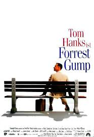
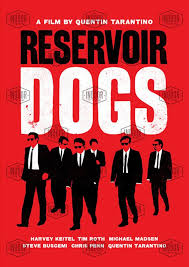

Memento

A man with short-term memory loss attempts to track down his wife's murderer.
Inception

A thief who steals corporate secrets through the use of dream-sharing technology is given the inverse task of planting an idea into the mind of a CEO.
The Prestige

After a tragic accident, two stage magicians engage in a battle to create the ultimate illusion while sacrificing everything they have to outwit each other.
Forrest Gump
The presidencies of Kennedy and Johnson, Vietnam, Watergate, and other history unfold through the perspective of an Alabama man with an IQ of 75.
Reservoir Dogs
After a simple jewelry heist goes terribly wrong, the surviving criminals begin to suspect that one of them is a police informant.